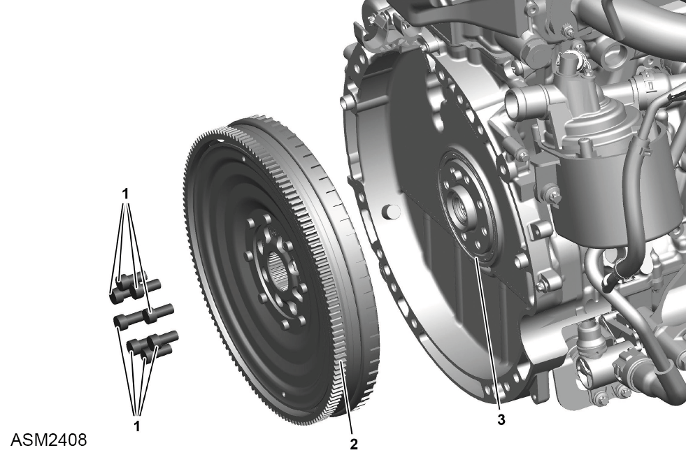

Dual Mass Flywheel - 4 Cylinder
Print
Operation Code: 40.11.14-02
Removal
- Remove transmission assembly. Refer to procedure.
- Remove crankshaft position sensor. Refer to procedure.
- Use suitable flywheel holding tool to lock flywheel ring gear to engine block.

- Remove bolts (1) (x8) securing dual mass flywheel (2) to engine. Torque 45 Nm + 90 degrees.
 CAUTION: To avoid damaging crankshaft, do not use an impact wrench/driver or a similar compressed air tool to remove bolts.
CAUTION: To avoid damaging crankshaft, do not use an impact wrench/driver or a similar compressed air tool to remove bolts.
- Using assistance, remove dual mass flywheel.
Installation
- Installation is the reverse of removal procedure except for the following:
NOTE: Dowel pin of crankshaft determines installation position.
- Inspect rear radial shaft sealing ring (3) for leaks, renew if necessary.
- Progressively tighten dual mass flywheel bolts in a diagonal pattern.